Machine Learning vs Programming
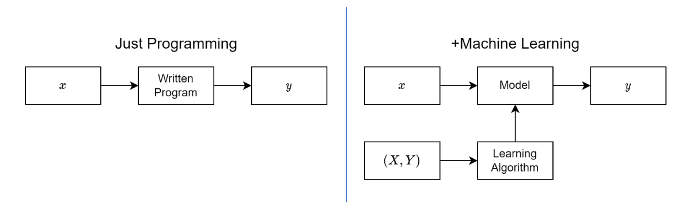
ML vs Traditional Programming
- Traditional programming: You write explicit rules to map inputs to outputs. Real-world edge cases require many exception rules.
- Machine learning: You provide examples of inputs and outputs. The system learns the rules from data.
Deep Learning is Machine Learning
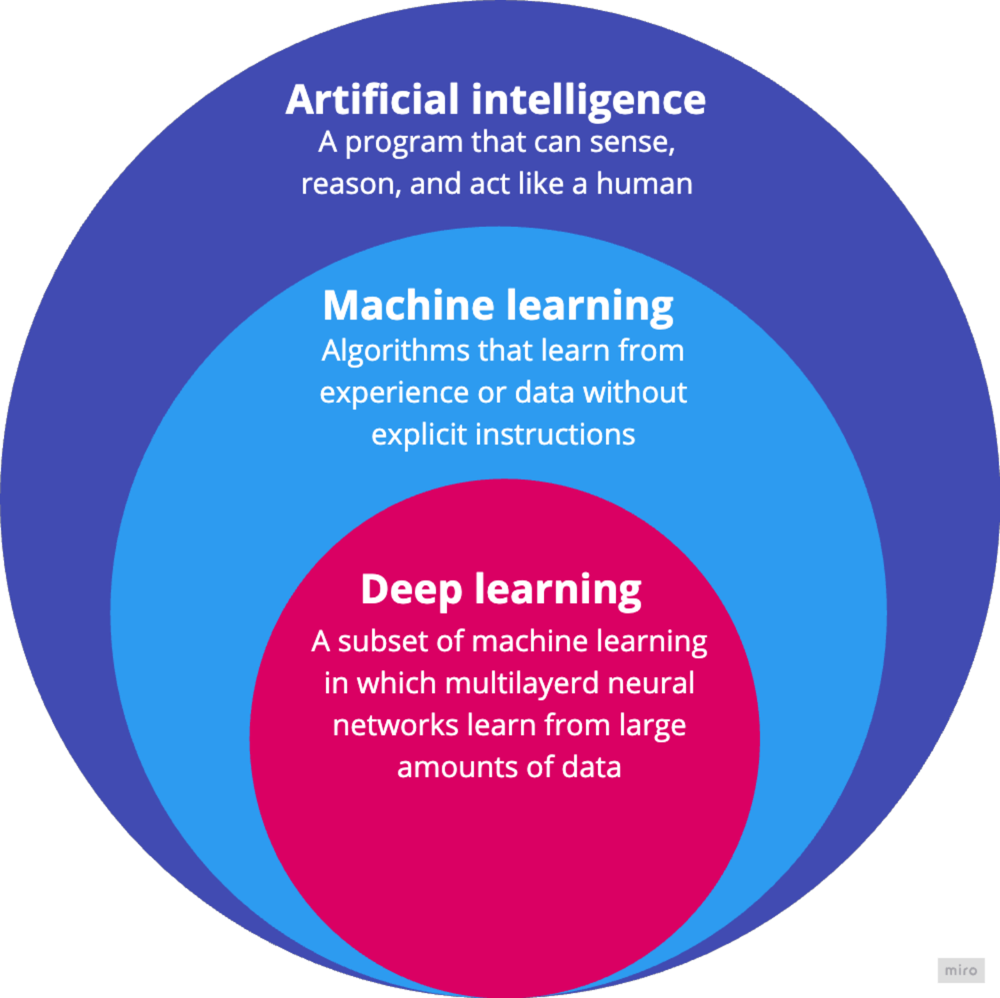
Venn Diagram: AI > ML > DL
Deep learning takes ML further using neural networks - they can learn complex patterns from massive amounts of unstructured noisy data.
Challenge: Unstructured Data
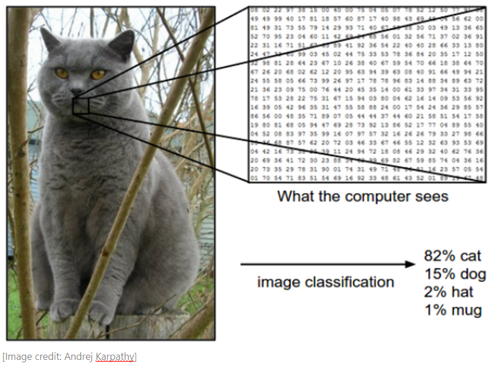
High-Dimensional Data
- 224 × 224 image = 50,176 pixels
- 1080p image = 2,073,600 pixels
ML Algorithm: Multi-layer Neural Networks
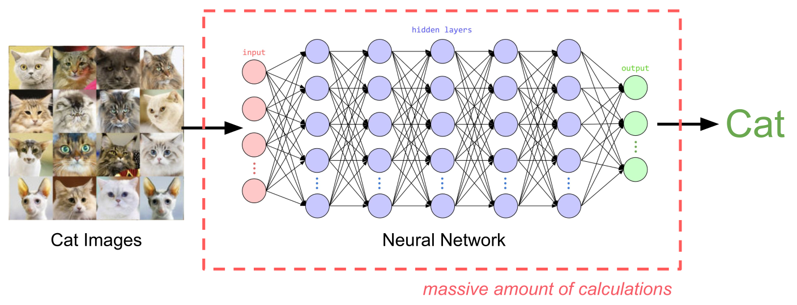
Neural Network Processing
- Deep as in the number of layers in a neural network (20 to +1000 layers).
- Representation Learning from raw data (very low signal-to-noise ratio).
Analogy: Visual Cortex
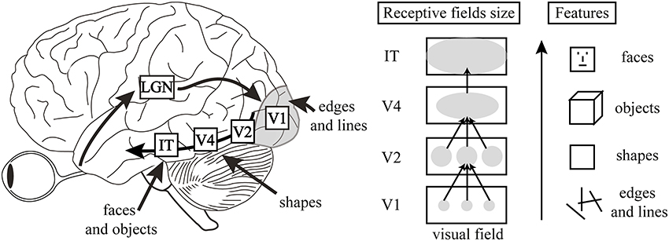
Visual Cortex High-Level Features
Hierarchical Feature Extraction: From Retinal Input to Complex Object Recognition in the Ventral Stream goes through a layered system in the brain.
Supervised Deep Learning Datasets
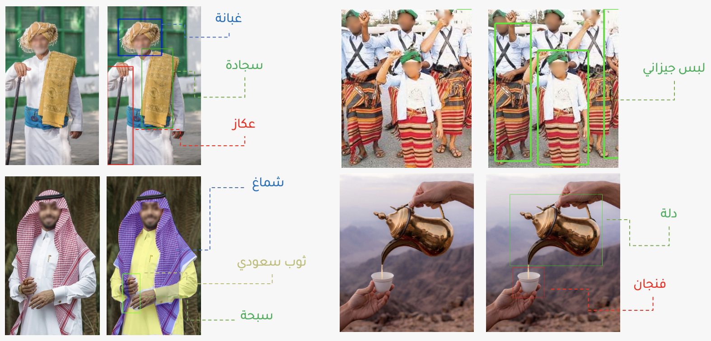
Data Annotation in Computer Vision Models
- \(X\): Pixels.
- \(Y\): Classification (Whole image, or each pixel, or boxes).
Many Deep Learning Applications
Specialized Vision-only Models:
Multi-modal Models (language + voice + vision):
Tradeoffs Between DL and ML
We’ll compare ML and DL across six characteristics:
- Data Structure
- Feature Engineering
- Modeling
- Interpretability
- Data Scale
- Computational Cost
Let’s look at each one, one by one.
1. Data Structure
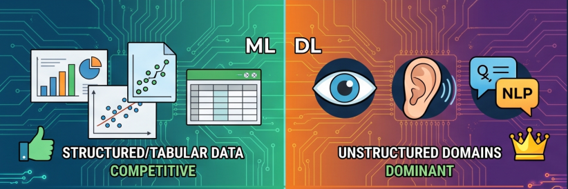
Data Structure
- ML: Competitive on structured/tabular data
- DL: Dominant in unstructured domains like vision, speech, and NLP
2. Feature Engineering
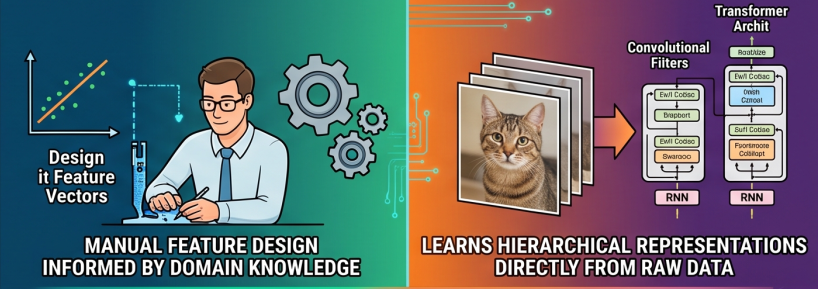
Feature Engineering
- ML: Relies heavily on manual feature design
- DL: Learns hierarchical representations directly from raw data
3. Modeling
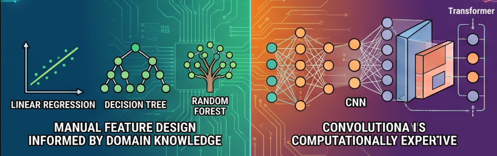
Modeling
- ML: Linear models, Decision Trees, Random Forests, Gradient Boosting
- DL: Multi-layer Neural Networks, CNNs, RNNs, Transformers
4. Interpretability
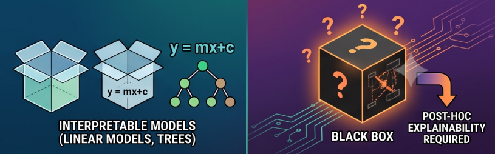
Interpretability
- ML: Many models are relatively interpretable
- DL: Often behaves like a black box and needs post-hoc explanation
5. Data Scale
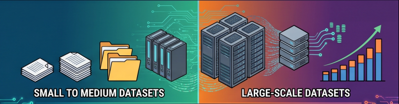
Data Scale
- ML: Performs well with small to medium datasets
- DL: Typically needs large-scale datasets to generalize well
6. Computational Cost
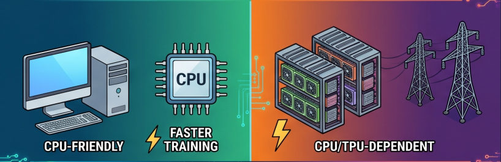
Computational Cost
- ML: Often CPU-friendly with faster training
- DL: Usually GPU/TPU-dependent and more computationally expensive
Choose the right tool for the task?
- ML often requires manual feature engineering and works well on structured/tabular data
- DL excels at unstructured data (images, speech, text) and learns hierarchical representations directly from raw data
Not a good fit for DL:
- When simple rules already work well (go for ML models)
- When you need to explain decisions clearly (interpretability)
- When errors cannot be tolerated (noisy models)
- When you have limited data (needs massive amounts of data)